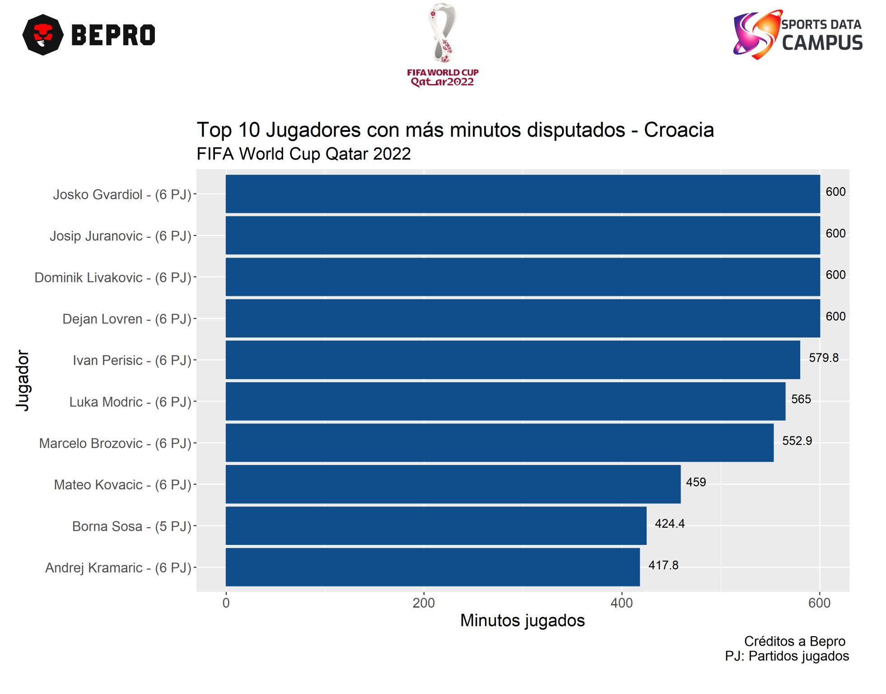
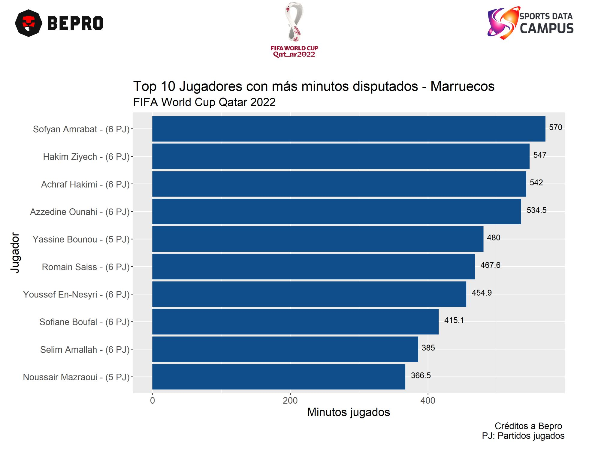
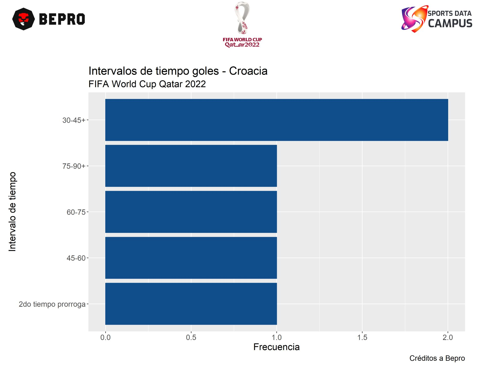
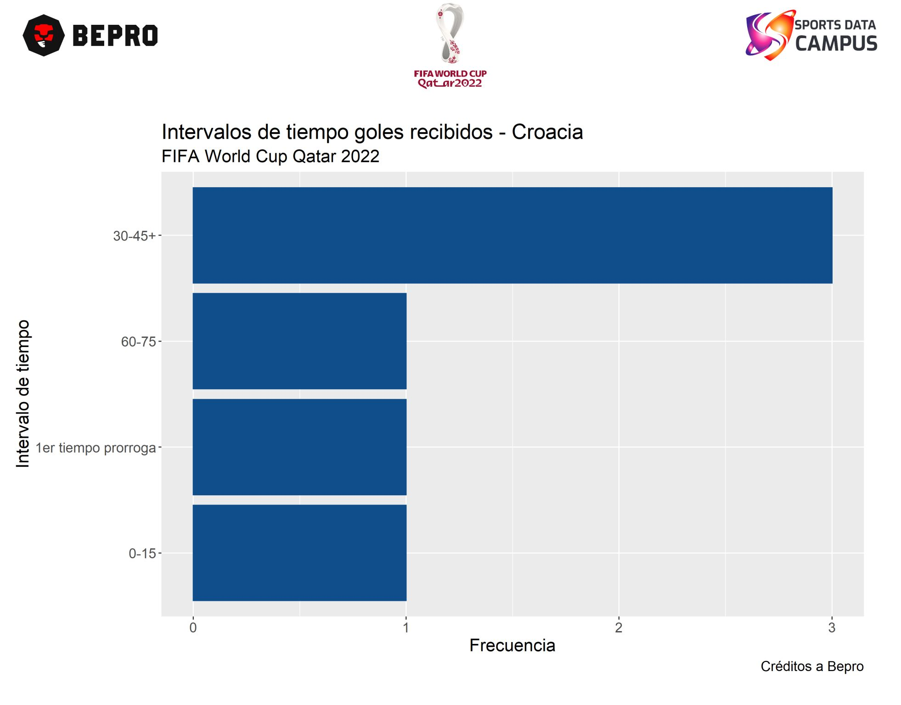
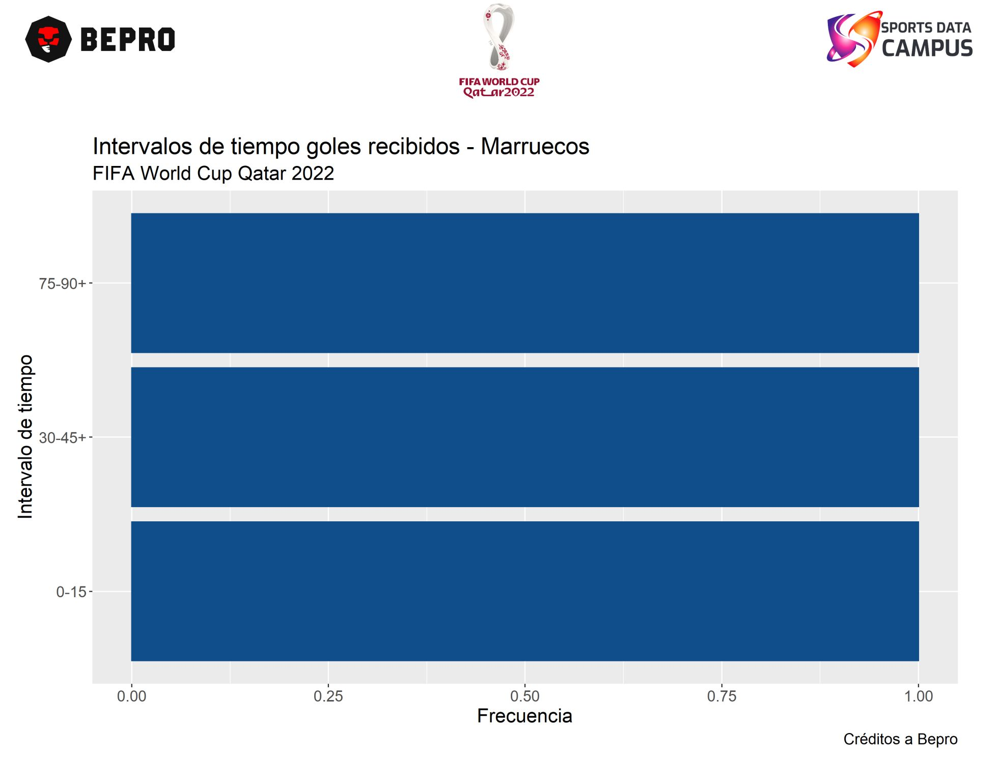

Croacia y Marruecos juegan por el tercer y cuarto puesto de la copa del mundo Qatar 2022.
Gracias a la colaboración de Sports Data Campus y BEPRO fue posible contar con la información de todos los partidos de las semifinales de final y fase de grupos del mundial Qatar 2022 ⚽.
Es importante conocer la cantidad de minutos que cada jugador a disputado y así saber a priori que equipo llega con más carga a este juego. Otro punto clave es la cantidad de goles anotados y recibidos por cada equipo. En los siguientes gráficos se presenta este análisis,
1 y 2. 📊 Top 10 jugadores con más minutos disputados,
💡 En Croacia destacan Josko Gvardiol con 600 minutos jugados, seguido de Josip Juranovic y Dominik Livakovic ambos con 600 minutos y 6 partidos jugados.
💡 En Marruecos destacan Sofyan Amrabat con 570 minutos, seguido de Hakim Ziyech con 547 minutos y Achraf Hakimi con 542 minutos.
3 y 4. 📊 Goles realizados,
💡 Croacia ha realizado 6 goles en lo que va de mundial, 2 de ellos en el primer tiempo, 3 en el segundo tiempo y 1 en el segundo tiempo de la prórroga.
💡 Marruecos por su parte ha hecho 5 goles, 3 de ellos en el primer tiempo y 2 en el segundo tiempo.
5 y 6. 📊 Goles recibidos,
💡 Croacia ha recibido 6 goles en el mundial, 4 de ellos son en el primer tiempo, 1 en el segundo tiempo y 1 en el primer tiempo de la prórroga.
💡 Marruecos es una de las selecciones con menos goles encajados, sólo ha permitido 3, dos de ellos en el 1er tiempo y sólo 1 en el segundo tiempo. Es importante señalar que uno de esos goles fue un autogol.